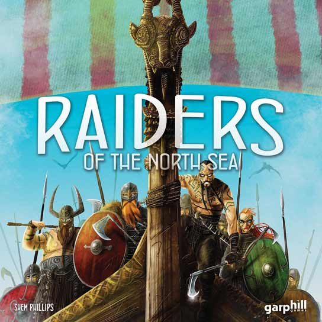
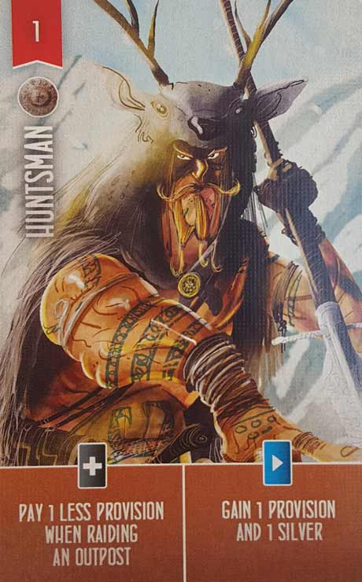
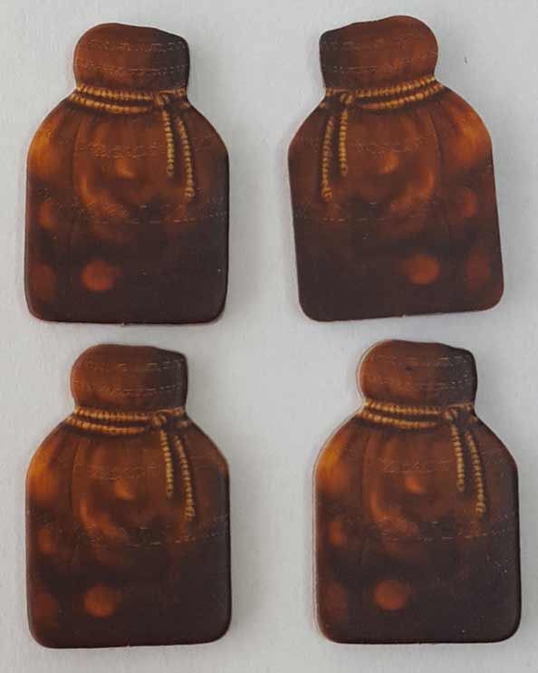
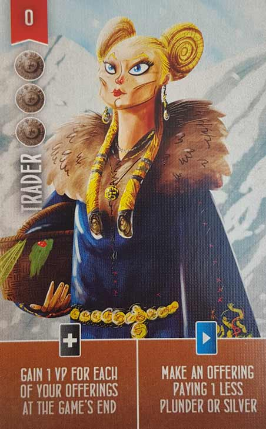
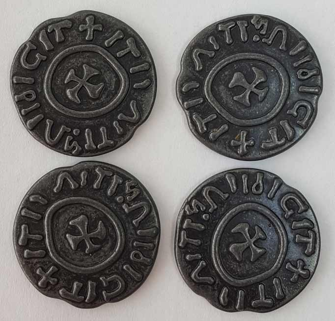
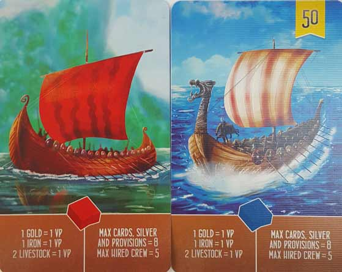
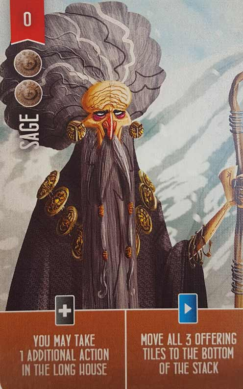
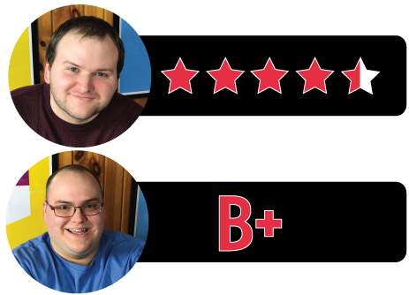

In this Raiders of the North Sea review, we break down the light Euro-style, Viking-themed board game from Garphill Games and Renegade Game Studios. Designed by Shem Phillips, Raiders takes its players on a journey back to the age of the Vikings, when adventure and pillaging was still a way of life for the Norsemen. Surprisingly, this game isn’t all about raiding, as its players need to collect provisions and manage other resources for the journey. For more details, continue reading below.

D reviews Raiders of the North Sea
 (Author’s
note: this review is meant to accompany our gameplay video and will not
go too in-depth on the game’s rules. If you’re interested in learning
how the game is played, please watch the video. It’s not bad.)
(Author’s
note: this review is meant to accompany our gameplay video and will not
go too in-depth on the game’s rules. If you’re interested in learning
how the game is played, please watch the video. It’s not bad.)
A defining trait of Euro-style board games is a lack of direct player conflict. Instead of engaging in battles and whatnot, players are sort of playing their own separate games simultaneously. In theory, that might make it sound like Euro-style games are more laid-back than their American-style relatives, which are generally known for involving high amounts of luck-based conflict and drama. In practice, however, I don’t believe that to be the case. Sure, they may present a facade of thoughtfulness and class, but at their core, I think these games are driven by passive-aggression. And I love it.
Shem Phillips’ Raiders of the North Sea is no exception to this. In fact, I would say it’s particularly subtle and insidious in the way it pits the players against each other. There’s almost no overt infighting in Raiders; all players are part of the same clan and therefore technically on the same side, with only the occasional usage of cards allowing one player to directly affect another (and I’d argue that the inclusion of those abilities is a mistake). Instead, everyone shares the abundant resources available in the village and goes out raiding at their leisure. It’s all so pleasant… except it’s not.
Ignoring the fact that the theme of Raiders of the North Sea involves everyone plundering nearby settlements simply to increase their social status, the game does a really good job of manufacturing unpleasantness among its players by using its mechanics alone. The competition over raiding spots is the most obvious way that this is achieved. Like many Euro-style games, Raiders involves everyone building up resources and then staking a claim over something – in this case the settlements – when they feel the time is right. The game starts with a lot of settlements to raid, so early on there isn’t much tension or competitiveness in this, but things gets increasingly more stressful as the number of available settlements diminishes. While hopping around the village to gather resources is easy and necessary at the start of the game, by the end of it, every turn spent doing that feels like a missed opportunity and opens up a chance for an opponent to steal the precious plunder that you’ve had your eye on for a while.
And while the fight for plunder is the most obvious source of strife, I wouldn’t necessarily call it the best, because the “work” mechanic is brilliant. In some worker placement games, certain locations can only be used by one player per turn, while in others it may be possible for everyone to do the same thing. However, the way that Raiders handles this is new to me. While working in the village, players may place their worker on an open space and then take a worker from another space, performing the actions of both spaces in order. While it can be difficult to guess what your opponents are going to do on their turn in the early stages, by the end of the game, it’s not too difficult to make successful inferences regarding their intentions. And while it’s almost impossible to outright block someone from taking the actions they want to take, the distribution of workers might make it that they have to perform them in reverse order, which might not sound devastating but absolutely can be.
The different colors of the workers ties in to this as well. A game of Raiders will typically have three distinct phases, starting with the black workers having prominence, followed by the grey, and then the white at the end. The game becomes deeply strategic during the transitional turns, where taking a worker from a space to perform its action might force you to push back a raid for another turn or two until you can come into possession of the correctly colored worker again. It’s not always intentional, but the game does an excellent job of quietly sowing discontent between the players in a lot of little ways.
Raiders of the North Sea also makes excellent use of its theme, in my opinion. At first blush, it might seem like the game has one or two unnecessary systems, given the presence of three different scoring tracks on the board and several different ways to earn points overall. Fortunately, everything seems to be balanced very well, which allows for players to use completely different but equally legitimate strategies to achieve victory. The session in our video provides a good example of this. While Will and I focused our efforts mainly on building strength and raiding, Graham went a different route and kept raiding to a minimum, opting to focus on offerings to the chieftain instead. It’s not hard to picture this as a story, where one character hopes to earn favor by being a suck-up, while another does it via their deeds. Fortunately (spoilers ahead), in our game the good guy won.
There really aren’t many bad things I have to say about Raiders of the North Sea. My biggest concern is its replayability, which is often an issue in games that have a fairly strict structure, as this one does. Also, while it’s not what I would call a long game, it might be a bit more of a commitment than some people are willing to endure, especially younger players. So it’s not a game that I could imagine playing obsessively or even very regularly, but as something to be enjoyed occasionally, Raiders of the North Sea is a real treat. Especially if you’re a jerk like me.
D’s Rating: Four and One-half Stars out of Five
Will reviews Raiders of the North Sea
 From
what I know, Viking culture was more complicated than many people
think. They were mighty warriors, yes, but they were also farmers and
craftsmen. This fact is often lost on people, including game designers,
which is why Raiders of the North Sea kind of caught me off
guard. After all, a Vikings-themed game with the word “raiders” in its
title is most likely going to be combat-focused, right? Well, I’m glad
to report that Raiders of the North Sea is definitely not a
wargame; there’s worker placement, resource gathering and management,
and much more. Sure, there’s pillaging as well, but for the most part, Raiders is a truly accurate portrayal of Viking life. Oh yeah, it’s also pretty dang good.
From
what I know, Viking culture was more complicated than many people
think. They were mighty warriors, yes, but they were also farmers and
craftsmen. This fact is often lost on people, including game designers,
which is why Raiders of the North Sea kind of caught me off
guard. After all, a Vikings-themed game with the word “raiders” in its
title is most likely going to be combat-focused, right? Well, I’m glad
to report that Raiders of the North Sea is definitely not a
wargame; there’s worker placement, resource gathering and management,
and much more. Sure, there’s pillaging as well, but for the most part, Raiders is a truly accurate portrayal of Viking life. Oh yeah, it’s also pretty dang good.
Given the reputations of Garphill Games and Renegade Game Studios, I wasn’t surprised by this game’s physical and visual appeal. Component-wise, everything is well made, from the board to the cards to the coins – oh the coins. These coins are something special, considering they’re forged from real metal and are styled appropriately to the era. Metal components are always a plus, and it’s pretty shocking to find them in a standard version of a game (like we have) and not some special, deluxe edition. In addition, the artwork is pretty outstanding, with the credit going to Mihajlo Dimitrievski, the artist. Raiders of the North Sea looks beautiful, but more importantly, it looks unique. From here on out, when I see artwork similar to this, I’ll know for certain that it’s from this artist and part of the Raiders family of games.
As I previously pointed out, the gameplay of this game accurately matches what I’ve read about Viking life. Raiders of the North Sea is certainly not Blood Rage, which is a terrific, if not unrealistically stylized, board game in its own right. Instead, Raiders requires you to strategize and prepare before you can ever worry about pillaging and whatnot. But this is a good thing, as this game’s adherence to realism and common sense separate it from other Viking games. At its core, this game is all about worker placement. Before raiding is ever even a possibility, you’ll need to gather and manage some resources. In order to do that, you’ll have to place your workers on certain locations on the board. For instance, if you want Provisions, then you’ll have to head to the Mill to collect some, or you could even go to the Longhouse and slaughter one of your livestock for some as well. You may have noticed that there are multiple ways to collect the Provisions you need, and that’s the case for all of the resources in Raiders of the North Sea. It’s one of the game’s strongest traits – no matter what, there’s almost always a way to progress toward your goals. This game mostly isn’t about screwing people over; it’s unexpectedly fair and cordial.
Now, I understand that cordiality may not be what some people want from a Viking-themed game, and that’s completely understandable. To be honest, I did feel that Raiders of the North Sea was too easy-going sometimes. Even when I was crossing the North Sea to pillage a monastery, I didn’t actually feel that tough. And when I found out that I couldn’t really attack or sabotage my opponents, I was similarly disappointed. Before purchasing this game, it’s definitely important to realize that Raiders is a light, Euro-style board game. This means that the focus is on worker placement and resource management; not fighting. All of this leads me to my biggest complaint about this game: there’s just not enough player interaction. Occasionally, and I mean very occasionally, someone might block you from going to the location that you want to go to. But that’s it – that’s the extent of the interaction. On the positive side, this means that Raiders of the North Sea is a great lighthearted game to play with family and friends. Still, I’m starting to think that maybe the Viking-theme wasn’t the best choice, as it comes with certain expectations.
Recruiting your Viking crew is certainly a lot of fun though. You can only have five allies at a time, and you have to buy their loyalties using the awesome metal coins that come with the game. Almost every crew member has two special abilities that provide you with so many strategic options, such as buffing your crew’s overall strength or drawing extra resources during your turn. I really have to commend the designer, Shem Phillips, for balancing these cards so well and having such a variety. Actually, Raiders of the North Sea is up there with the most balanced games I’ve ever played. It really is, in most ways, a masterstroke of game design.
In the end, if you come into this game with expectations of brutal combat and impending Ragnarok, you’re going to be mightily crestfallen. There isn’t any dice-rolling against your opponents. There aren’t any combat cards. Odin and the other Norse gods don’t make cameo appearances. Instead, Raiders of the North Sea is a light, Euro-style game that does an admirable job portraying the Viking lifestyle with its livestock and mills and making offerings to the Chieftain. With one hundred percent certainty, I can say that Raiders is one of the most solidly designed games that I’ve ever experienced. Its balanced fairness is almost unparalleled, and for this reason, I can’t see anyone truly hating this game. Perhaps Raiders of the North Sea could’ve used a bit more player interaction and intrigue, and maybe that hurts replayability a bit. But still, if you keep your expectations in check, you’ll appreciate this game for what it is and realize it really does deserve the recognition it’s received.
I give Raiders of the North Sea a: B+
Raiders of the North Sea Review – Board Crazy’s Ratings

Leave a Reply
You must be logged in to post a comment.